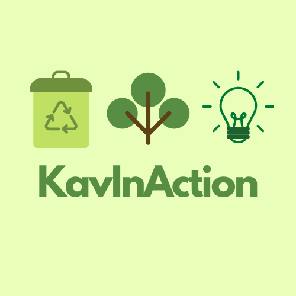

As I was selected for the project “European Youth at
the frontlines of active citizenship: A Roadmap towards
a collective South-North-East-West Momentum” organized
by Volunteers Centre Skopje and supported by European
Commission due to Erasmus+ European Youth Together
programme, I had the
opportunity to create my very own project named
KavInAction.

My aim was to make my voice and actions about raising awareness to be heard. The project
was about caring for the environment in my town Kavadarci, hoping that can I change things
for the better. I organized two actions, one was planting around 70 trees in an area
of Kavadarci and the other was cleaning around the Tikvesh lake.
The photos that you are looking are the first part of my project where we cleaned an area around the lake.
We collected 30 bags of waste and we sorted it out.
We were cleaning around 3 hours and I was beyond happy
that I was given the ability and support to do such an activity.
I did plenty of interviews about this project, so, if you want to see more about what my plans were for
this project you can click here,
and If you are interested in the "one year later feedback" from the project click here.
You can click here to check out all the five participants from North Macedonia who were selected to make a change
in the society with their own project.
These also are photos from the second and more challenging action, planting trees.
It took me time to find the perfect place to plant all
of those 70 trees. I had to co-operate with many people go give me the permission to do this action.